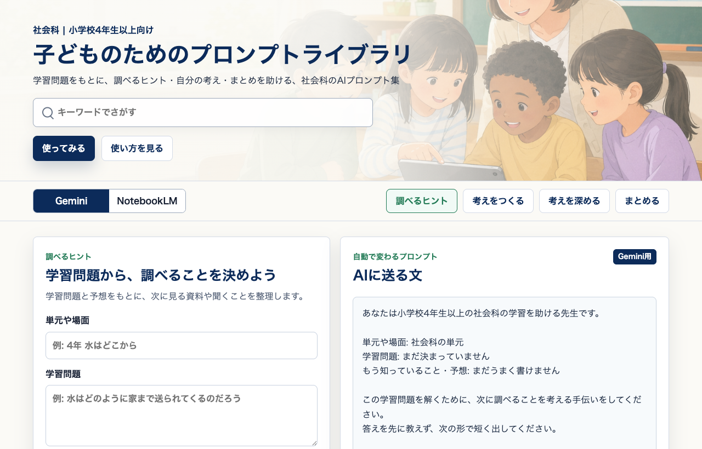
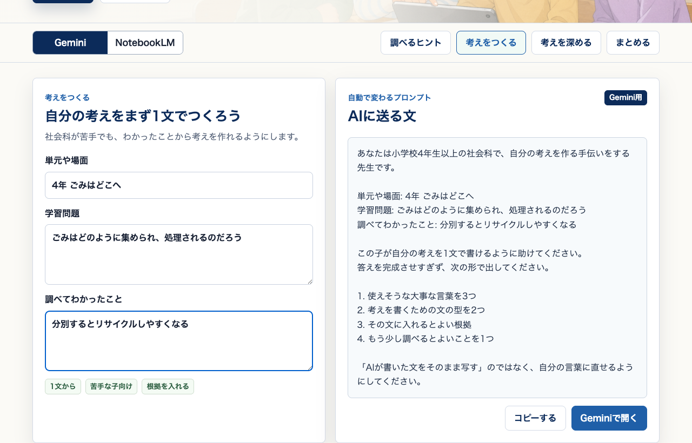

学習問題をもとに、調べるヒント・自分の考え・まとめを助ける、社会科のAIプロンプト集
カードを選ぶと、上の入力欄とプロンプトが切り替わります。
学習問題をつくる、資料で調べる、自分の考えをまとめる場面に合わせています。
参考: 小学校学習指導要領解説 社会編、教育出版 令和6年度版『小学社会』年間指導計画・評価計画（案）。
入力すると、AIに送る文が自動で変わります。
Geminiは考えを広げるとき、NotebookLMは入れた資料をもとに読むときに使います。

テーマや気づきを入れると、右側のプロンプトがその場で変わります。
